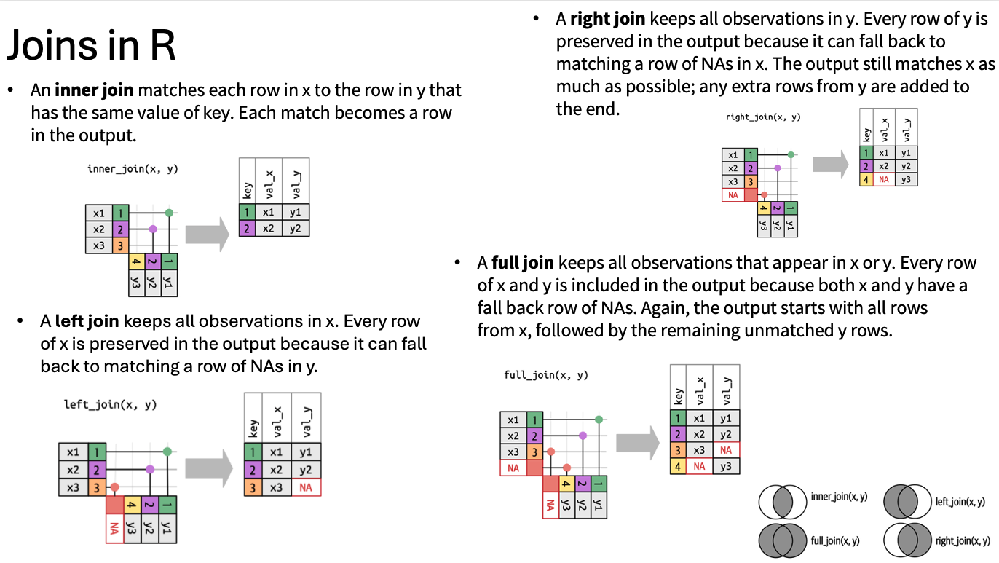

dplyr and
tidyr packages.select function from dplyr to pick
specific columns from a data frame.%>% to seamlessly connect
the output of one dplyr function to another.mutate.summarize, group_by, and
count to break down a data frame into subsets, compute
summary statistics for each subset, and then merge the results.tidyverseBracket subsetting, while useful, can become cumbersome and challenging to interpret, especially for complex operations.
dplyr. It’s a package designed to
simplify tabular data manipulation tasks, providing a more intuitive
approach. dplyr pairs seamlessly with
tidyr, which facilitates swift conversion
between various data formats, aiding in visualization and analysis.
In R, packages extend the functionality of the base language by
providing additional functions for various tasks. While R comes with
built-in functions like str() and
data.frame(), packages offer a broader range of tools. To
use a package, you typically need to install it on your system initially
and then import it into your R session whenever needed. The
tidyverse package, which you should
already have installed, is particularly valuable. It serves as an
“umbrella-package,” bundling together several essential packages for
data analysis, including tidyr,
dplyr,
ggplot2, and
tibble, among others, ensuring they work
harmoniously together.
To install the package type:
# install.packages("tidyverse")
# install.packages("ggpubr")To load the package type:
library("tidyverse") ## load the tidyverse packages, incl. dplyrWe’ll read in our data using the read.csv() function.
You should have already downloaded and organized data from the github
repo.
yield_df <- read.csv("input_data/tomato_grafting_yield_spad.csv", header = TRUE)
## inspect the data
str(yield_df)
# head of the data
head(yield_df)Notice that the class of the data is now tbl_df This is
referred to as a “tibble”. Tibbles are almost identical to R’s standard
data frames, but they tweak some of the old behaviors of data frames.
For our purposes the only differences between data frames and tibbles
are that:
character are never automatically
converted into factors.We’re going to learn some of the most common
dplyr functions: select(),
filter(), mutate(), group_by(),
summarize(), and join. To select columns of a
data frame, use select(). The first argument to this
function is the data frame (yield_df), and the subsequent
arguments are the columns to keep.
head(select(yield_df, plantID, sampling_date))We can also use pipe function to make it more clear. Pipes let you
take the output of one function and send it directly to the next, which
is useful when you need to do many things to the same dataset. Pipes in
R look like %>% and are made available via the
magrittr package, installed automatically
with tidyverse.
library(tidyverse)
yield_df %>% select(plantID, sampling_date) %>%
head()## plantID sampling_date
## 1 T1-B1-M-P1 6/15/18
## 2 T1-B2-M-P1 6/15/18
## 3 T1-B3-M-P1 6/15/18
## 4 T1-B4-M-P1 6/15/18
## 5 T2-B1-M-P1 6/15/18
## 6 T2-B2-M-P1 6/15/18To choose rows based on a specific criteria, use
filter():
yield_df %>% filter(sampling_date=="6/15/18") %>%
head()## plantID marketable_yield_kg spad_value sampling_date
## 1 T1-B1-M-P1 49.9 77.3 6/15/18
## 2 T1-B2-M-P1 47.7 79.2 6/15/18
## 3 T1-B3-M-P1 52.5 72.4 6/15/18
## 4 T1-B4-M-P1 52.5 78.5 6/15/18
## 5 T2-B1-M-P1 53.1 81.4 6/15/18
## 6 T2-B2-M-P1 53.8 79.5 6/15/18select is used for rows and
filter is used for columns.
What if you want to select and filter at the same time? Let say we want to select select plantID, sampling date, and filter marketable yield greater than 50.
yield_df %>%
select(plantID, marketable_yield_kg, sampling_date) %>%
filter(marketable_yield_kg > 50) %>%
head()## plantID marketable_yield_kg sampling_date
## 1 T1-B3-M-P1 52.5 6/15/18
## 2 T1-B4-M-P1 52.5 6/15/18
## 3 T2-B1-M-P1 53.1 6/15/18
## 4 T2-B2-M-P1 53.8 6/15/18
## 5 T3-B1-M-P1 50.8 6/15/18
## 6 T3-B2-M-P1 51.9 6/15/18In the above code, we use the pipe to send the yield_df
dataset first through select() to select the three columns
of interest, then we use filter() to filter out rows that
is greater tan 50. Since %>% takes the object on its
left and passes it as the first argument to the function on its right,
we don’t need to explicitly include the data frame as an argument to the
filter() and select() functions any more.
Some may find it helpful to read the pipe like the word “then”. For
instance, in the above example, we took the data frame
yield_df, then we filtered for rows
with marketable_yield_kg > 50, then we
selected columns plantID,
marketable_yield_kg, and sampling_date. The
dplyr functions by themselves are somewhat
simple, but by combining them into linear workflows with the pipe, we
can accomplish more complex manipulations of data frames.
If we want to create a new object with this smaller version of the data, we can assign it a new name:
yield_g_50 <- yield_df %>%
select(plantID, marketable_yield_kg, sampling_date) %>%
filter(marketable_yield_kg > 50)
head(yield_g_50)## plantID marketable_yield_kg sampling_date
## 1 T1-B3-M-P1 52.5 6/15/18
## 2 T1-B4-M-P1 52.5 6/15/18
## 3 T2-B1-M-P1 53.1 6/15/18
## 4 T2-B2-M-P1 53.8 6/15/18
## 5 T3-B1-M-P1 50.8 6/15/18
## 6 T3-B2-M-P1 51.9 6/15/18Note that the final data frame is the leftmost part of this expression.
Can you selec the samples with marketable_yield greater than 50 for the sampled collected in june but not july?
yield_g_50_june <- yield_df %>%
select(plantID, marketable_yield_kg, sampling_date) %>%
filter(marketable_yield_kg > 50 & sampling_date=="6/15/18") %>%
head()
# what about negative selection
yield_g_50_m2 <- yield_df %>%
select(plantID, marketable_yield_kg, sampling_date) %>%
filter(marketable_yield_kg > 50 & sampling_date!="july-15-2018") %>%
head()Frequently you’ll want to create new columns based on the values in
existing columns, for example to do unit conversions, or to find the
ratio of values in two columns. For this we’ll use
mutate().
To create a new column of weight in kg:
yield_df %>%
mutate(marketable_yield_gram = marketable_yield_kg * 1000) %>%
head()## plantID marketable_yield_kg spad_value sampling_date marketable_yield_gram
## 1 T1-B1-M-P1 49.9 77.3 6/15/18 49900
## 2 T1-B2-M-P1 47.7 79.2 6/15/18 47700
## 3 T1-B3-M-P1 52.5 72.4 6/15/18 52500
## 4 T1-B4-M-P1 52.5 78.5 6/15/18 52500
## 5 T2-B1-M-P1 53.1 81.4 6/15/18 53100
## 6 T2-B2-M-P1 53.8 79.5 6/15/18 53800You can also create a second new column based on the first new column
within the same call of mutate():
yield_df %>%
mutate(marketable_yield_gram = marketable_yield_kg * 1000,
marketable_yield_lbs = marketable_yield_kg * 2.2) %>%
head()## plantID marketable_yield_kg spad_value sampling_date marketable_yield_gram
## 1 T1-B1-M-P1 49.9 77.3 6/15/18 49900
## 2 T1-B2-M-P1 47.7 79.2 6/15/18 47700
## 3 T1-B3-M-P1 52.5 72.4 6/15/18 52500
## 4 T1-B4-M-P1 52.5 78.5 6/15/18 52500
## 5 T2-B1-M-P1 53.1 81.4 6/15/18 53100
## 6 T2-B2-M-P1 53.8 79.5 6/15/18 53800
## marketable_yield_lbs
## 1 109.78
## 2 104.94
## 3 115.50
## 4 115.50
## 5 116.82
## 6 118.36If this runs off your screen and you just want to see the first few
rows, you can use a pipe to view the head() of the data.
(Pipes work with non-dplyr functions, too,
as long as the dplyr or
magrittr package is loaded).
yield_df %>%
mutate(marketable_yield_gram = marketable_yield_kg * 1000,
marketable_yield_lbs = marketable_yield_kg * 2.2) %>%
head()## plantID marketable_yield_kg spad_value sampling_date marketable_yield_gram
## 1 T1-B1-M-P1 49.9 77.3 6/15/18 49900
## 2 T1-B2-M-P1 47.7 79.2 6/15/18 47700
## 3 T1-B3-M-P1 52.5 72.4 6/15/18 52500
## 4 T1-B4-M-P1 52.5 78.5 6/15/18 52500
## 5 T2-B1-M-P1 53.1 81.4 6/15/18 53100
## 6 T2-B2-M-P1 53.8 79.5 6/15/18 53800
## marketable_yield_lbs
## 1 109.78
## 2 104.94
## 3 115.50
## 4 115.50
## 5 116.82
## 6 118.36How to deal with NA in data? Although the example data set that we are working here doesnot have NA. Lets modify the dataframe and work with it. For now you can just run the following code.
yield_wit_NA_df <- yield_df %>%
mutate(raw_yield = ifelse(marketable_yield_kg < 20, NA, marketable_yield_kg)) %>%
head()The first few rows of the output are full of NAs, so if
we wanted to remove those we could insert a filter() in the
chain:
yield_wit_NA_df %>%
filter(!is.na(raw_yield)) %>%
mutate(marketable_yield_gram = marketable_yield_kg * 1000) %>%
head()## plantID marketable_yield_kg spad_value sampling_date raw_yield
## 1 T1-B1-M-P1 49.9 77.3 6/15/18 49.9
## 2 T1-B2-M-P1 47.7 79.2 6/15/18 47.7
## 3 T1-B3-M-P1 52.5 72.4 6/15/18 52.5
## 4 T1-B4-M-P1 52.5 78.5 6/15/18 52.5
## 5 T2-B1-M-P1 53.1 81.4 6/15/18 53.1
## 6 T2-B2-M-P1 53.8 79.5 6/15/18 53.8
## marketable_yield_gram
## 1 49900
## 2 47700
## 3 52500
## 4 52500
## 5 53100
## 6 53800is.na() is a function that determines whether something
is an NA. The ! symbol negates the result, so
we’re asking for every row where weight is not an
NA.
Create a new data frame from the yield_wit_NA_df data
that meets the following criteria: contains only the
plantID, sampling_date columns, and a new
column called marketable_yield_lbs containing values of
marketable yield in pound (lbs). Note: 1kg ~ 2.2lbs In this
marketable_yield_lbs column, there are no NAs
and all values are less than 100lbs and belong to july sampling. Name
this data frame yield_july_lbs_df.
Hint: think about how the commands should be ordered to produce this data frame!
yield_july_lbs_df <- yield_wit_NA_df %>%
filter(!is.na(raw_yield)) %>%
filter(sampling_date=="july-15-2018") %>%
mutate(marketable_yield_lbs = marketable_yield_kg * 2.2) %>%
filter(marketable_yield_lbs > 100 ) %>%
select(plantID, sampling_date, marketable_yield_lbs)Many data analysis tasks can be approached using the
split-apply-combine paradigm: split the data into groups, apply
some analysis to each group, and then combine the results.
dplyr makes this very easy through the use
of the group_by() function.
group_by() is often used together with
summarize(), which collapses each group into a single-row
summary of that group. group_by() takes as arguments the
column names that contain the categorical variables for
which you want to calculate the summary statistics. So to compute the
mean weight by sex:
yield_df %>%
group_by(sampling_date) %>%
summarize(mean_weight = mean(marketable_yield_kg, na.rm = TRUE))## # A tibble: 2 × 2
## sampling_date mean_weight
## <chr> <dbl>
## 1 6/15/18 29.2
## 2 july-15-2018 29.4You may also have noticed that the output from these calls doesn’t
run off the screen anymore. It’s one of the advantages of
tbl_df over data frame.
Often we have multiple table to work with, and in dplyr we can combine different related table using joins. Lets bring in our metadata file, join with the yiled data. This will allow us to answer more interesting meaningful question regarding tomato yield across various rootstocks that we studied in this work.
meta_df <- read.csv("input_data/tomato_grafting_metadata.csv", header = TRUE)
str(meta_df)## 'data.frame': 160 obs. of 2 variables:
## $ plantID : chr "T1-B1-M-P1" "T1-B2-M-P1" "T1-B3-M-P1" "T1-B4-M-P1" ...
## $ rootstock: chr "Maxifort" "Maxifort" "Maxifort" "Maxifort" ...# merge metadata with yield data
yield_with_meata_df <- merge(yield_df, meta_df, by="plantID")
head(yield_with_meata_df)## plantID marketable_yield_kg spad_value sampling_date rootstock
## 1 T1-B1-M-P1 49.9 77.3 6/15/18 Maxifort
## 2 T1-B1-M-P2 52.9 80.6 july-15-2018 Maxifort
## 3 T1-B1-N-P1 33.4 53.2 6/15/18 Nongraft
## 4 T1-B1-N-P2 21.1 48.9 july-15-2018 Nongraft
## 5 T1-B1-R-P1 23.0 47.4 6/15/18 RST-04-106
## 6 T1-B1-R-P2 27.0 51.4 july-15-2018 RST-04-106
You can also group by multiple columns:
yield_with_meata_df %>%
group_by(rootstock, sampling_date) %>%
summarize(mean_weight = mean(marketable_yield_kg, na.rm = TRUE))## `summarise()` has grouped output by 'rootstock'. You can override using the
## `.groups` argument.## # A tibble: 8 × 3
## # Groups: rootstock [4]
## rootstock sampling_date mean_weight
## <chr> <chr> <dbl>
## 1 Maxifort 6/15/18 49.7
## 2 Maxifort july-15-2018 49.4
## 3 Nongraft 6/15/18 23.4
## 4 Nongraft july-15-2018 21.9
## 5 RST-04-106 6/15/18 23.1
## 6 RST-04-106 july-15-2018 24.0
## 7 Selfgraft 6/15/18 20.5
## 8 Selfgraft july-15-2018 22.1Here we are getting average marketable_yield_kg by rootstocks and two sampling dates.
Once the data are grouped, you can also summarize multiple variables at the same time (and not necessarily on the same variable). For instance, we could add a column indicating the mean spad for each rootstock:
yield_with_meata_df %>%
group_by(rootstock) %>%
summarize(mean_weight = mean(marketable_yield_kg),
mean_spad = mean(spad_value))## # A tibble: 4 × 3
## rootstock mean_weight mean_spad
## <chr> <dbl> <dbl>
## 1 Maxifort 49.5 80.1
## 2 Nongraft 22.6 52.6
## 3 RST-04-106 23.6 53.5
## 4 Selfgraft 21.3 51.5Find maximum yiled by rootstocks in each sampling date Arrange the table by smapling date by in descending date, i.e july first, then june.
Try out a new function, count(). Group the data by
rootstock and pipe the grouped data into the
count() function. How could you get the same result using
group_by() and summarize()? Hint: see
?n.
Are the number of sample per rootstocks same for june and july?
## Answer 1
yield_with_meata_df %>%
group_by(rootstock, sampling_date) %>%
summarize(max_yiled = max(marketable_yield_kg)) %>%
arrange(desc(sampling_date))## `summarise()` has grouped output by 'rootstock'. You can override using the
## `.groups` argument.## # A tibble: 8 × 3
## # Groups: rootstock [4]
## rootstock sampling_date max_yiled
## <chr> <chr> <dbl>
## 1 Maxifort july-15-2018 55.1
## 2 Nongraft july-15-2018 29.2
## 3 RST-04-106 july-15-2018 27.7
## 4 Selfgraft july-15-2018 28.7
## 5 Maxifort 6/15/18 54.4
## 6 Nongraft 6/15/18 33.4
## 7 RST-04-106 6/15/18 27.3
## 8 Selfgraft 6/15/18 27.5## Answer 2
yield_with_meata_df %>%
group_by(rootstock) %>%
count()## # A tibble: 4 × 2
## # Groups: rootstock [4]
## rootstock n
## <chr> <int>
## 1 Maxifort 40
## 2 Nongraft 40
## 3 RST-04-106 40
## 4 Selfgraft 40## Answer 3
yield_with_meata_df %>%
group_by(rootstock, sampling_date) %>%
count()## # A tibble: 8 × 3
## # Groups: rootstock, sampling_date [8]
## rootstock sampling_date n
## <chr> <chr> <int>
## 1 Maxifort 6/15/18 20
## 2 Maxifort july-15-2018 20
## 3 Nongraft 6/15/18 20
## 4 Nongraft july-15-2018 20
## 5 RST-04-106 6/15/18 20
## 6 RST-04-106 july-15-2018 20
## 7 Selfgraft 6/15/18 20
## 8 Selfgraft july-15-2018 20